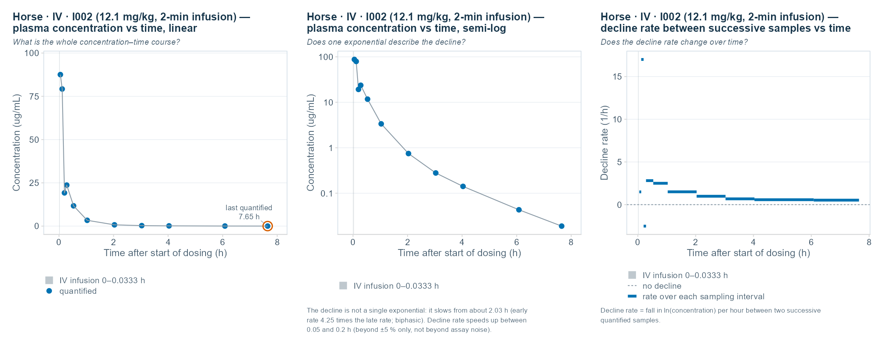
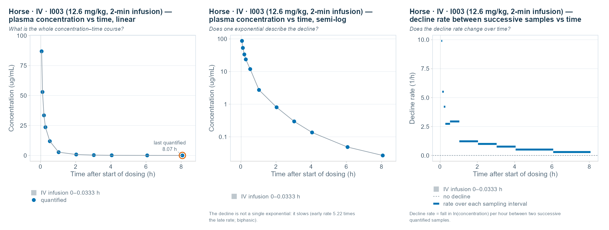
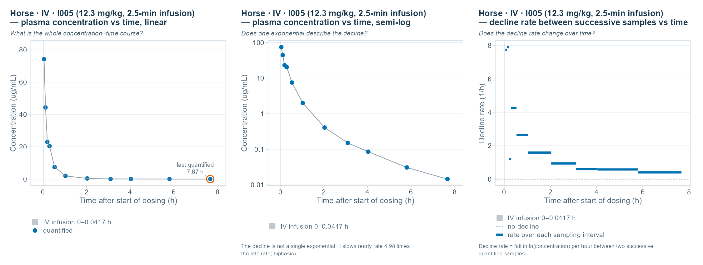
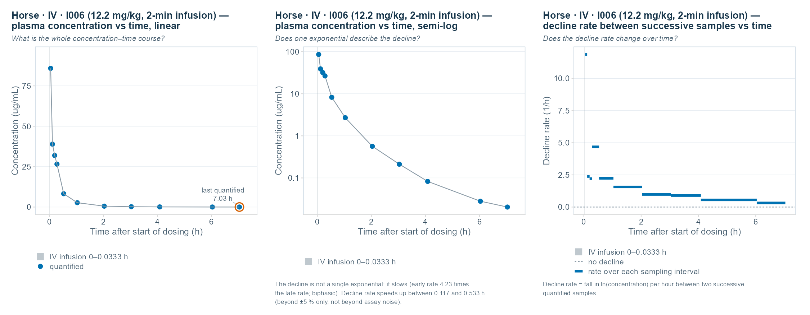
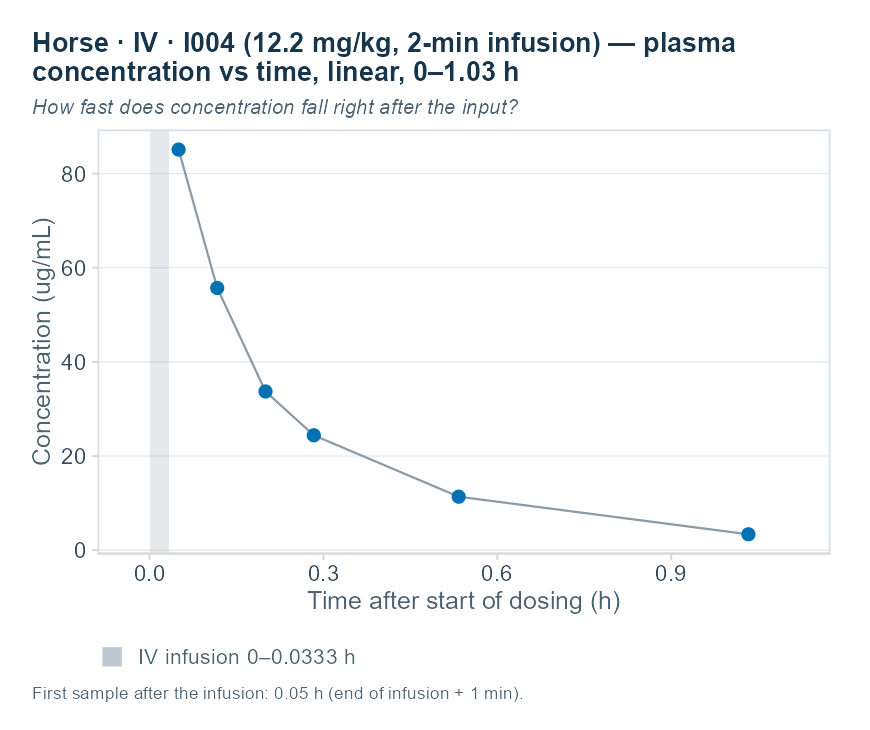
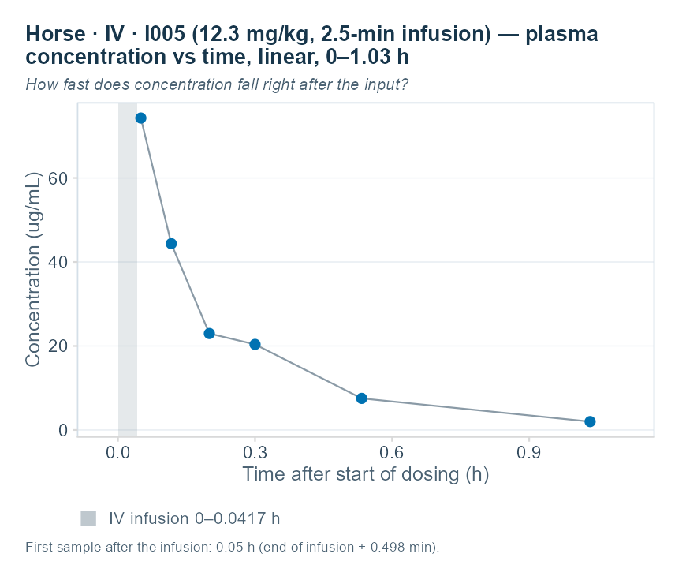
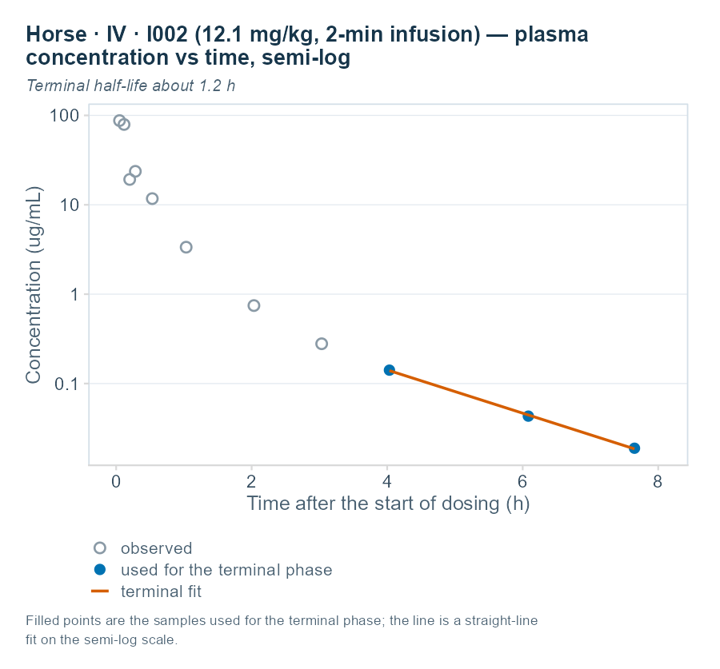
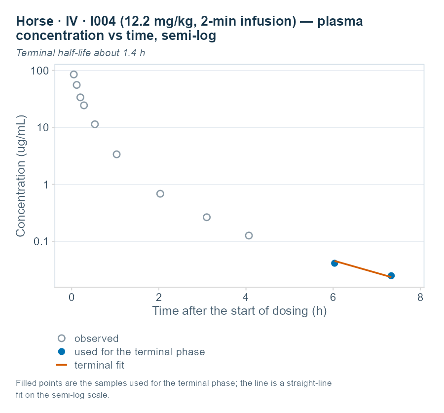
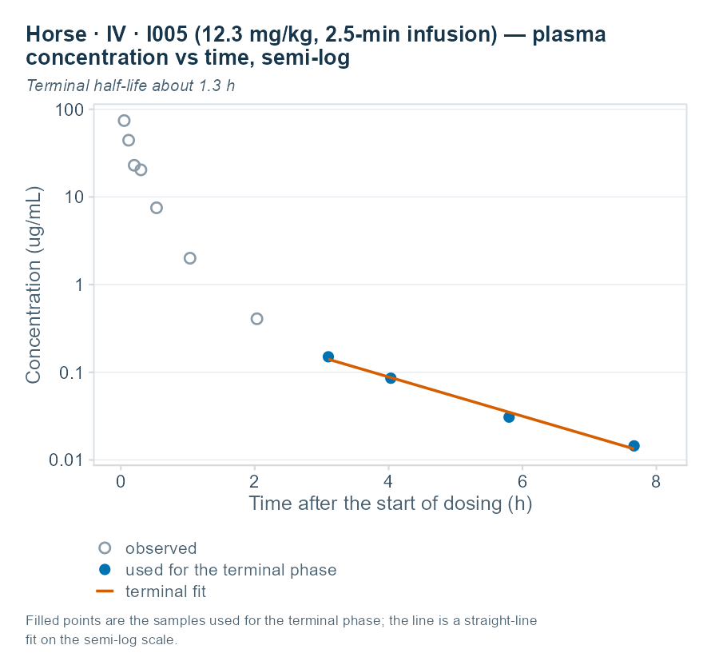
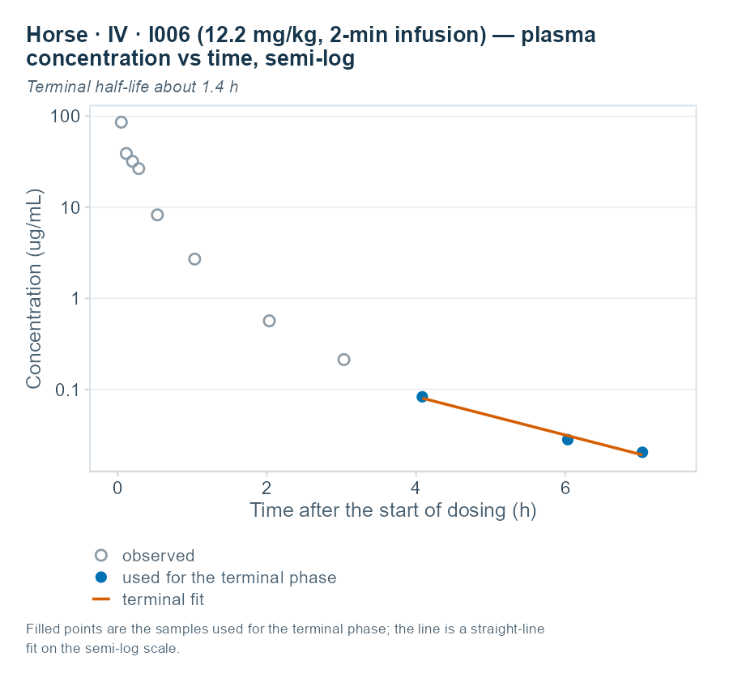

PK / PD workbench · EDA figures
DBG01 · All figures
Browse the existing rendered panels. Open the category page for the observations, interpretation and limitations.
19 panels
No figures match this search.
DistributionDBG01_Horse_IV:c_I001
 Distribution
DistributionDBG01_Horse_IV:c_I002

DistributionDBG01_Horse_IV:c_I003

DistributionDBG01_Horse_IV:c_I004
 Distribution
DistributionDBG01_Horse_IV:c_I005

DistributionDBG01_Horse_IV:c_I006

DistributionEarly window · DBG01_Horse_IV:c_I001
 Distribution
DistributionEarly window · DBG01_Horse_IV:c_I002
 Distribution
DistributionEarly window · DBG01_Horse_IV:c_I003
 Distribution
DistributionEarly window · DBG01_Horse_IV:c_I004

DistributionEarly window · DBG01_Horse_IV:c_I005

DistributionEarly window · DBG01_Horse_IV:c_I006
 Distribution
DistributionQ1 · Systemic disposition: DBG01_Horse_IV · linear and semilog concentrations
 Elimination and metabolism
Elimination and metabolismQ1 · Plasma clearance: EM-T · terminal phase of I001 (dose dependence cannot be read from this profile)
 Elimination and metabolism
Elimination and metabolismEM-T · Terminal phase · I002

Elimination and metabolismEM-T · Terminal phase · I003
 Elimination and metabolism
Elimination and metabolismEM-T · Terminal phase · I004

Elimination and metabolismEM-T · Terminal phase · I005

Elimination and metabolismEM-T · Terminal phase · I006
